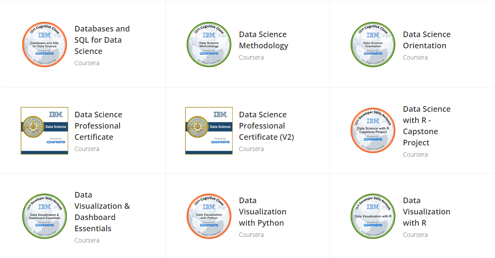
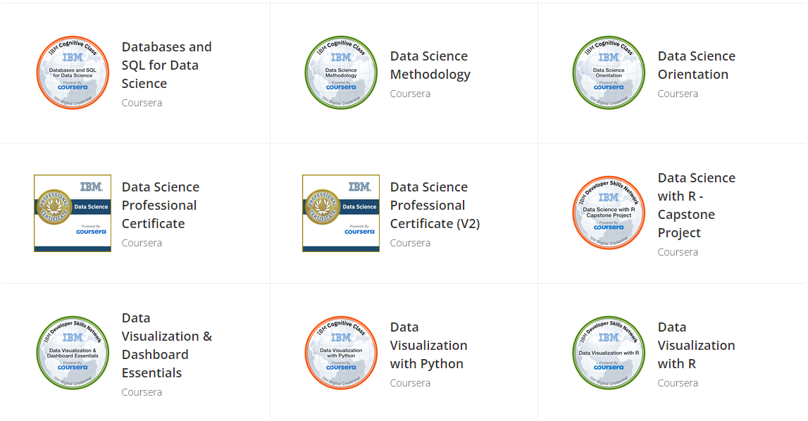

Welcome to my profile.
Last Update 2025-05-07

As a senior biostatistician with extensive experience in providing statistical input into Phase I-IV clinical trials and medical device trial development, I seek to bring a dynamic combination of education and expertise to an industry-leading employer. My professional background includes overseeing 50+ international clinical trials across diverse medical fields including Dermatology, Endocrinology, Hematology, Hepatology, Immunology, Infections and Infestations Disorders, Neurology, Oncology, Ophthalmology, Urology and Nephrology and Ultrasonography.
I am skilled in data management, mathematical modeling, survival analysis, and longitudinal/statistical analysis. My project management capabilities are well-honed, making me a diligent and goal-oriented professional ready to make an immediate impact on any fast-paced team. Anchored in solid statistical knowledge and an aggressive approach to problem-solving, I maintain a conscientious and responsible work ethic to guarantee high-quality deliverables.


📫 How to Reach me


| Property | Data |
|---|---|
| Language / IDE | |
| Domain Knownledge | |
| CI / CD | |
| Machine Learning / Deep Learning frameworks |
Languages
Most used programming languages
Qualification Certificates
 
